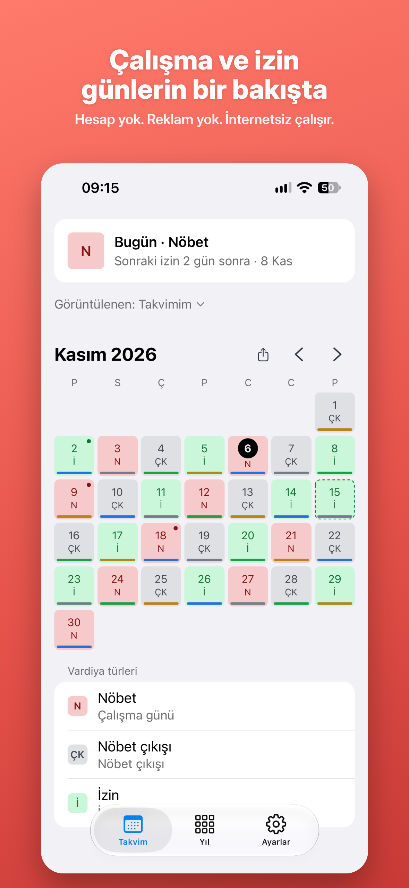
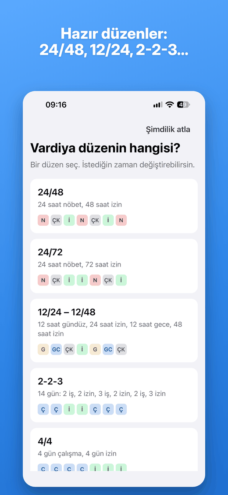
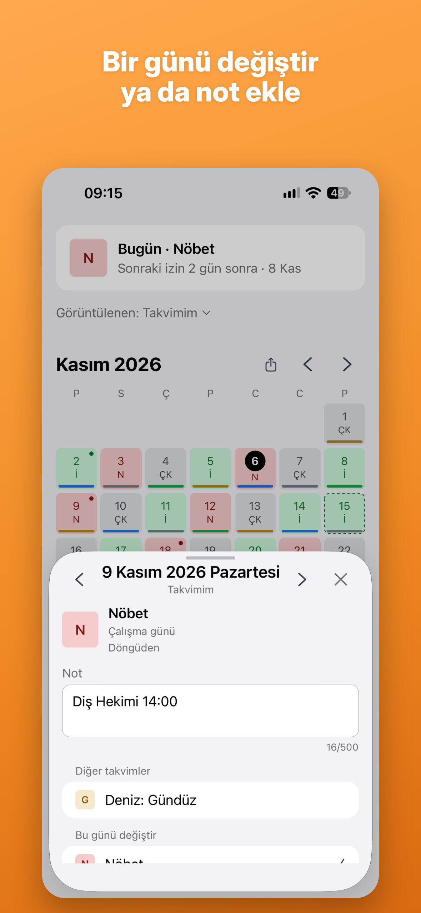

On & Off
iPhone için vardiya takvimi
Vardiya düzenini bir kez gir, çalışma ve izin günlerini yıllarca gör.

Hazır düzenler
24/48, 24/72, 12/24–12/48, 2-2-3, 4/4, 7/7, 14/14 ya da kendi düzenin.
Her gün bir bakışta
Ay ve yıl görünümü, tek gün değişiklikleri, notlar ve paylaşılabilir ay görseli.
On & Off Pro
Tek seferlik satın alma: ana ekran widget'ı ve 4 takvime kadar. Aile Paylaşımı dahil.



Gizlilik önce gelir
Hesap yok, reklam yok, takip yok. Verilerin iPhone'unda kalır.